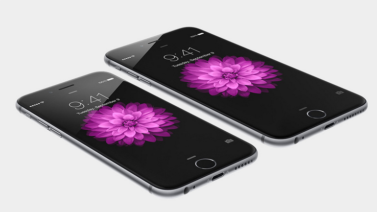
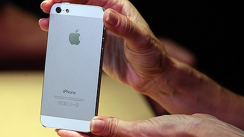

iPhone 6
Meer dan alleen groter
First article
iPhone 6 is niet alleen groter - hij is op alle fronten beter. Groter, maar ook een stuk dunner. Krachtiger, maar ongekend energiezuinig.
Met een glad metalen oppervlak dat naadloos aansluit op het nieuwe Retina HD-display. Het is één geheel waarin hardware en software in perfecte harmonie samengaan. En het resultaat is een iPhone van een nieuwe generatie die op alle vlakken beter is.
Het display is niet alleen groter, maar ook beter.
De grootte van de nieuwe Retina HD-displays met hogere resolutie van iPhone 6 en iPhone 6 Plus is misschien het eerste wat je opvalt. Maar dat is nog maar de buitenkant. Met innovaties voor een verbeterd contrast, "dual-domain"-pixels voor zeer nauwkeurige kleuren en een bredere kijkhoek, en een verbeterde polarisator zijn dit de dunste en meest geavanceerde Multi-Touch-displays die we ooit hebben gemaakt.